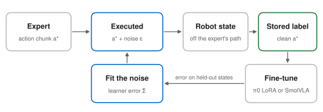

The project tests whether DART's noise, sized to the learner's error, still beats plain isotropic noise when the learner is a pretrained vision-language-action model that predicts action chunks. The application adds the same calibrated pushes to teleoperation, so new fine-tuning data contains recoveries.
Proposed research
DART adds noise to the expert's executed controls, and the expert's own action at each state it reaches becomes the label. The noise covariance is fit to the learner's error and scaled to a guess of its final error. Collection stays off-policy, so the expert keeps control, and on a real robot grasping in clutter DART raised success from 49% (behavior cloning) to 79%, averaged over four human supervisors.
Two later results question the calibration. Zhang et al. (2025) inject fixed-scale isotropic noise in one pass, with clean labels and half the trajectories left clean, and match DART on HalfCheetah and beat it on Humanoid, with small state-based policies. MimicGen, the main generator of synthetic demonstrations, adds noise with σ = 0.05 but stores the noisy executed action as the label. DiscoDemo (2026) ran DART with fixed isotropic noise for π0.5 in simulation, as a side experiment. I found no paper that sizes the noise to a pretrained VLA's own error.
Why it matters. If H1 fails, the cheaper isotropic recipe is enough for VLAs too. Either outcome changes how fine-tuning data is collected, and both are cheaper than on-policy rollouts or human corrections.

| Tasks | MimicGen robosuite Square, Threading and Coffee (D1). |
|---|---|
| Expert | The MimicGen generator, patched to log the clean action next to the executed one. |
| Policy | π0 with LoRA through openpi (more than 22.5 GB of GPU memory); SmolVLA for the noise sweeps. |
| Round 0 | 200 clean demos. Fine-tune, then fit the learner's error covariance and its correlation across the action chunk on held-out expert states. |
| Round 1 | 800 more successful demos per arm, with the same seeds and start states across arms. |
| Metrics | Success with Wilson intervals; DART's shift gap (the loss on the policy's own states minus on demo states); the expert's success under noise; recovery after a push at test time. |
Compute (estimate). 150–250 GPU-hours for collection and LoRA fine-tunes, on one 32 GB GPU plus a university cluster. One arm is timed first.
Risks. The pretrained VLA may already recover: the π0 paper says "the diverse (but lower quality) pre-training data allows the model to recover from mistakes". A null result still tells data collectors to skip calibration. The waypoint expert corrects arm drift, not object drift. Noise lowers the expert's success, so only successful demos are kept and the yield is reported.
Proposed application
Why it can work. In DART's robot study, twice the chosen noise hurt the human supervisors (72% instead of 79%), so the size must be calibrated, not maximal. Bayesian Disturbance Injection and DIPA inject disturbances into operator actions on real robots. Robotic Data Inoculation (2026) steers teleoperation toward a learner's likely errors with a learned model and keeps the clean command as the label, for a small flow policy. None of these collects VLA fine-tuning data with noise sized from the VLA's own error.
Related work
| Work | What it does | What this proposal adds |
|---|---|---|
| DART, 2017 | Noise sized to the learner's error, clean labels, small policies. | A pretrained VLA with action chunks. |
| Zhang et al., 2025 | One-shot isotropic noise is on par with DART and DAgger for small state-based policies. | The same test at VLA scale. |
| Policy-Calibrated DAgger, 2026 | Noise statistics estimated offline from a diffusion policy, used as augmentation inside HG-DAgger. | Noise during collection, sized for a VLA. |
| MimicGen, 2023 | Noise in synthetic demos; the noisy action is the label. | Clean labels and sized noise. |
| DiscoDemo, 2026 | Fixed isotropic DART noise for π0.5 in simulation, a side experiment. | Noise sized to the VLA's own error. |
| Robotic Data Inoculation, 2026 | Learned perturbations of teleoperation toward a learner's errors. | A VLA, and calibration without a learned model. |
| π*0.6 (Recap), 2025 | Human corrections and greedy exploration. | Designed perturbations. |
Sources. DART (Laskey, Lee, Fox, Dragan and Goldberg, CoRL 2017, arXiv:1703.09327), Sec. 4.1 and 5.1–5.2 and the appendix. Zhang, Pfrommer, Pan, Matni and Simchowitz (arXiv:2507.09061), Sec. 4.1 and 5, Fig. 2 and 10, App. E.3. Wang and Kantor (arXiv:2609.30462), Sec. IV and VI. MimicGen (arXiv:2310.17596), App. N.4, and its code (mimicgen/datagen/waypoint.py). DiscoDemo (Park et al., arXiv:2610.32093), App. C–D. Robotic Data Inoculation (Li, Zhou, Xu and Levine, arXiv:2610.39054). π0 (arXiv:2410.24164), Sec. V; π*0.6 (arXiv:2511.14759), Sec. IV-B and the discussion. Bayesian Disturbance Injection (arXiv:2103.13623) and DIPA (arXiv:2303.12375). openpi README for the memory needs. I read these between 1 and 2 November 2026; the list can be incomplete.